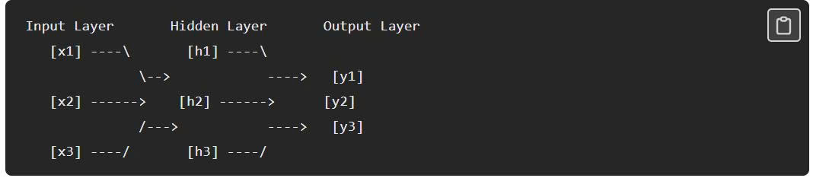

Transformer là kiến trúc đứng sau mọi large language model (LLM) hiện đại. Nó nhận một chuỗi token làm đầu vào và sinh ra một chuỗi token làm đầu ra, sử dụng attention để hiểu mối quan hệ giữa các từ với nhau. Khi nghe "transformer", ta thấy có vẻ phức tạp — nhưng nếu tách nhỏ ra từng phần, mỗi thành phần đều đơn giản. Sự phức tạp đến từ cách chúng được xếp chồng lên nhau, chứ không phải từ bất kỳ mảnh nào quá khó.
I. Tại sao cần Transformer?
Trước khi transformer ra đời, các mô hình xử lý ngôn ngữ (như RNN, LSTM) xử lý từng từ theo thứ tự tuần tự — giống như đọc một câu từ trái sang phải, mỗi lần một từ. Cách tiếp cận này có hai nhược điểm lớn:
- Vấn đề 1 — quên thông tin xa (long-range forgetting): khi câu càng dài, mô hình bắt đầu quên các từ xuất hiện trước đó. Đến từ thứ 50, ký ức về từ thứ 1 đã rất mờ nhạt. Điều này khiến mô hình khó nắm bắt mối quan hệ giữa các phần xa nhau trong câu.
- Vấn đề 2 — chậm (slowness): vì các từ được xử lý lần lượt, từ thứ 2 phải chờ từ thứ 1 xử lý xong, từ thứ 3 phải chờ từ thứ 2, v.v. Điều này khiến quá trình huấn luyện cực kỳ chậm, đặc biệt với dữ liệu lớn.
Transformer ra đời để giải quyết cả hai vấn đề: nó xử lý tất cả token đầu vào cùng lúc (song song), cho phép mỗi token "nhìn" trực tiếp mọi token khác. Kết nối tầm xa không còn là vấn đề lớn. Nhờ song song hóa, huấn luyện nhanh hơn rất nhiều.
II. Hai nửa của kiến trúc
Transformer nguyên bản có hai nửa chính:
- Encoder (bộ mã hóa): đọc và hiểu đầu vào.
- Decoder (bộ giải mã): sinh ra đầu ra.
Hãy hình dung như một cuộc trò chuyện giữa người đọc và người viết. Người đọc (encoder) đọc tài liệu cẩn thận và tạo ra ghi chú chi tiết. Người viết (decoder) dùng những ghi chú đó để viết tài liệu mới. Người đọc tập trung vào hiểu, người viết tập trung vào tạo ra. Hai nửa này phối hợp với nhau để biến một chuỗi đầu vào thành một chuỗi đầu ra có ý nghĩa.
III. Tokenization, Embedding và Positional Encoding
Trước khi dữ liệu vào encoder/decoder, nó phải trải qua ba bước tiền xử lý quan trọng.
1. Tokenization — Biến chữ thành token
Mô hình không hiểu chữ, chỉ hiểu số. Bước đầu tiên là tách văn bản thành các token nhỏ — có thể là một từ, một phần của từ, hoặc thậm chí một ký tự. Ví dụ: "i love learning" → 3 token: "i", "love", "learning".
2. Embedding — Biến token thành vector
Mỗi token được chuyển thành một vector số gọi là embedding — giống như "dấu vân tay số" của từ. Các từ có nghĩa tương tự sẽ có embedding gần nhau. Ví dụ: "happy" và "joyful" có embedding rất giống nhau, còn "happy" và "car" có embedding rất khác nhau.
3. Positional Encoding — Thêm thông tin thứ tự
Vì encoder xử lý tất cả token cùng lúc, mô hình không biết từ nào đứng trước, từ nào đứng sau. Câu "i love ai" và "ai love i" sẽ trông giống hệt nhau nếu thiếu thông tin vị trí. Positional encoding giải quyết bằng cách cộng thêm một vector vị trí vào mỗi embedding. Từ thứ 1 nhận tín hiệu vị trí khác từ thứ 2, v.v.
Sau bước này, mỗi token mang một vector duy nhất mã hóa cả ý nghĩa lẫn vị trí của nó trong câu.
IV. Attention Mechanism và Multi-Head Attention
1. Attention — Trái tim của Transformer
Attention cho phép mỗi từ nhìn vào mọi từ khác trong câu và quyết định mức độ tập trung vào từng từ. Ví dụ câu: "the cat sat on the mat because it was tired." Khi xử lý từ "it", mô hình cần biết "it" ám chỉ gì — con mèo hay cái thảm? Attention giúp mô hình tập trung nhiều hơn vào "cat" (vì phù hợp ngữ cảnh hơn) và ít hơn vào "mat".
2. Cách Attention hoạt động — Q, K, V
Vector từ (embedding) được chuyển thành ba vector:
| Thành phần | Ý nghĩa |
|---|---|
| Query (Q) | Từ này đang tìm kiếm điều gì? |
| Key (K) | Từ này có thể cung cấp điều gì? |
| Value (V) | Thông tin thực sự mà từ này mang |
Quy trình:
- Mỗi từ dùng query của mình so sánh với key của mọi từ khác bằng tích vô hướng (dot product) → tạo ra attention scores (điểm liên quan).
- Chia scores cho √dₖ để giữ chúng trong khoảng ổn định (scaled dot-product).
- Chuẩn hóa bằng softmax → biến thành xác suất cộng lại bằng 1.
- Tính tổng có trọng số của các value theo xác suất đó.
Kết quả: mỗi từ giờ mang không chỉ thông tin của bản thân mà cả thông tin từ những từ liên quan nhất. Từ "it" giờ mang tín hiệu mạnh từ "cat".
3. Multi-Head Attention — Nhiều góc nhìn song song
Transformer không chạy attention chỉ một lần. Nó chạy nhiều lần song song, mỗi lần từ một góc nhìn khác — gọi là multi-head attention.
Ví dụ: như một nhóm biên tập viên cùng xem một bài viết. Một người kiểm tra ngữ pháp, một người kiểm tra sự thật, một người kiểm tra mạch văn. Mỗi người nhìn cùng văn bản nhưng tập trung vào khía cạnh khác nhau. Tổng hợp lại → đánh giá toàn diện.
Mỗi head tập trung vào một loại quan hệ khác nhau: một head quan hệ chủ ngữ – động từ, head khác tính từ bổ nghĩa cho danh từ nào, v.v.
Input
|
-------------------------------
| | | | |
Head 1 Head 2 Head 3 ... Head N (chạy song song)
| | | | |
-------------------------------
|
Combined
|
Output
Đầu ra của tất cả head được ghép lại để cho mô hình hiểu biết phong phú về văn bản.
V. Feed-Forward Networks, Residual Connections và Layer Normalization
1. Feed-Forward Network (FFN) — Bước tinh chỉnh
Sau attention, đầu ra đi qua mạng feed-forward. Nếu attention là về hiểu quan hệ giữa các từ, thì FFN là về đào sâu hiểu biết từng từ riêng lẻ. Nó nhận biểu diễn đã được làm giàu từ attention và xử lý tiếp — làm sắc nét tín hiệu, loại bỏ nhiễu. Mỗi từ đi qua cùng một FFN độc lập.
Hình 1: Mạng FNN.

2. Residual Connection (Skip Connection) — Giữ lại thông tin gốc
Sau mỗi sub-layer (attention hoặc FFN), đầu vào ban đầu của sub-layer được cộng lại vào đầu ra.
Ví dụ: như ghi chép trong lớp học. Dù giáo viên thêm thông tin mới, ta vẫn giữ ghi chú gốc và kết hợp thông tin mới vào.
Điều này ngăn mô hình mất thông tin quan trọng khi dữ liệu đi qua nhiều tầng.
3. Layer Normalization — Ổn định số liệu
Sau mỗi residual connection, các con số được chuẩn hóa — điều chỉnh để giữ trong khoảng ổn định. Điều này ngăn số trở nên quá lớn hoặc quá nhỏ khi đi qua nhiều tầng, giúp quá trình huấn luyện ổn định và mượt mà.
VI. Encoder và Decoder hoạt động như thế nào?
1. Encoder — Đọc và hiểu
Mỗi tầng encoder có hai thành phần:
- Self-attention: mỗi từ nhìn vào mọi từ khác trong đầu vào để hiểu quan hệ.
- Feed-forward network: tinh chỉnh biểu diễn của từng từ một cách độc lập.
Cả hai đều được theo sau bởi residual connection + layer normalization.
Ví dụ với câu "i love learning":
- Tầng 1: self-attention cho mỗi từ nhìn mọi từ khác.
"love"nhận ra"i"là chủ ngữ,"learning"là tân ngữ. FFN tinh chỉnh hiểu biết này. - Tầng 2: kết nối trở nên phong phú hơn.
"love"không chỉ biết"i"và"learning"riêng lẻ — nó bắt đầu hiểu ý nghĩa kết hợp của cả cụm "i love learning" như một suy nghĩ hoàn chỉnh. - Đến tầng 6: mỗi từ mang biểu diễn sâu sắc, nhận biết ngữ cảnh.
"learning"không còn chỉ là định nghĩa từ điển — nó mã hóa sự thật rằng đây là thứ"i"yêu thích, trong đúng câu này.
Sau tất cả tầng encoder, ta có hiểu biết phong phú về đầu vào, được truyền sang decoder.
2. Decoder — Sinh đầu ra từng token
Mỗi tầng decoder có ba thành phần:
- Masked self-attention: mỗi từ đầu ra nhìn vào các từ đầu ra trước đó, nhưng không nhìn về tương lai. Khi sinh văn bản, các từ tương lai chưa tồn tại. Từ
"love"có thể nhìn"i"nhưng không nhìn"learning"vì"learning"chưa được sinh ra. Hạn chế này gọi là causal masking. - Cross-attention: đây là cầu nối giữa decoder và encoder. Mỗi từ đầu ra nhìn vào đầu ra của encoder để kéo thông tin liên quan từ đầu vào. Ở đây query đến từ decoder, còn key và value đến từ encoder. Đây chính là điểm khác biệt so với self-attention — và là cầu nối giữa hiểu đầu vào và sinh đầu ra.
- Feed-forward network: bước tinh chỉnh giống encoder.
Cả ba đều theo sau bởi residual connection + layer normalization.
3. Decoder chọn từ tiếp theo như thế nào?
Sau khi đầu ra đi qua tất cả tầng decoder, nó vẫn là vector số — chưa phải từ. Decoder xử lý tiếp:
- Linear layer: chuyển vector thành điểm số cho mọi từ trong từ vựng. Nếu từ vựng có 50.000 từ → 50.000 điểm.
- Softmax: chuyển điểm thành xác suất (0–1, tổng bằng 1).
- Chọn từ: mô hình chọn từ tiếp theo dựa trên xác suất. Trong thực tế dùng nhiều chiến lược — temperature, top-k, top-p sampling — để điều khiển độ sáng tạo/tập trung. Đơn giản nhất là chọn từ có xác suất cao nhất.
Ví dụ dịch "i love learning" sang tiếng Pháp, khi đã sinh "j'":
"adore": 0.72 "aime": 0.15 "mange": 0.01 ... (50.000 từ, đa số xác suất rất nhỏ)
Mô hình chọn "adore" vì xác suất cao nhất.
VII. Dữ liệu chảy qua toàn bộ kiến trúc
Lấy ví dụ dịch "i love learning" sang tiếng Pháp.
Giai đoạn Encoder
- Tokenize:
"i love learning"→ 3 token:"i","love","learning". - Embed: mỗi token → vector số (embedding).
- Add position: positional encoding được cộng vào, để mô hình biết
"i"ở vị trí 1,"love"vị trí 2,"learning"vị trí 3. - Qua 6 tầng encoder: trong mỗi tầng, self-attention cho mọi từ nhìn mọi từ khác, FFN tinh chỉnh hiểu biết, residual + layer norm giữ ổn định.
- Kết quả: sau 6 tầng, encoder tạo ra biểu diễn phong phú của đầu vào. Mỗi từ mang thông tin ngữ cảnh sâu sắc. Biểu diễn này được truyền sang decoder.
Giai đoạn Decoder
Decoder sinh bản dịch tiếng Pháp từng từ một.
- Sinh
"j'"(từ thứ 1): decoder bắt đầu với token đặc biệt"start". Masked self-attention không có gì để nhìn lại (đây là token đầu). Cross-attention nhìn vào đầu ra encoder để hiểu đầu vào tiếng Anh. Qua linear + softmax → chọn"j'"là từ đầu tiên khả dĩ nhất. - Sinh
"adore"(từ thứ 2): decoder có["start", "j'"]. Masked self-attention nhìn"start"và"j'"để hiểu đã sinh gì. Cross-attention nhìn lại encoder để kéo thông tin từ đầu vào tiếng Anh. Linear + softmax → chọn"adore". - Sinh
"apprendre"(từ thứ 3): decoder có["start", "j'", "adore"]. Masked self-attention nhìn cả ba token trước. Cross-attention kết nối encoder. Chọn"apprendre". - Sinh token
"end": decoder sinh token đặc biệt"end"— báo hiệu bản dịch hoàn tất.
Kết quả cuối cùng: "j'adore apprendre" — nghĩa là "i love learning" trong tiếng Pháp.
VIII. Ba biến thể của Transformer
Transformer nguyên bản dùng cả encoder và decoder. Nhưng không phải lúc nào cũng cần cả hai. Điều này tạo ra ba biến thể:
| Biến thể | Ví dụ | Đặc điểm | Ứng dụng |
|---|---|---|---|
| Encoder-Only | BERT | Chỉ dùng encoder. Đọc và hiểu đầu vào nhưng không sinh văn bản mới. | Phân loại email spam, phân tích cảm xúc, tìm câu trả lời trong văn bản cho trước. |
| Decoder-Only | GPT | Chỉ dùng decoder. Sinh văn bản từng token một. Mỗi token nhìn mọi token trước nhưng không nhìn tương lai. | Sinh văn bản, trả lời câu hỏi, viết code, hội thoại. Đây là biến thể đứng sau hầu hết LLM hiện đại. |
| Encoder-Decoder | T5, Transformer nguyên bản | Dùng cả hai phần. Encoder hiểu đầu vào, decoder sinh đầu ra dựa trên hiểu biết đó. | Dịch máy, tóm tắt, và các tác vụ biến đổi văn bản này thành văn bản khác. |
→ Chọn biến thể phù hợp tùy use case.
IX. Tại sao Transformer mạnh mẽ đến vậy?
Sau khi đã giải mã toàn bộ kiến trúc, đây là lý do transformer thay đổi mọi thứ:
- Xử lý song song (parallel processing): encoder xử lý mọi token đầu vào cùng lúc thay vì từng cái một. Ngay cả decoder cũng chạy song song trong huấn luyện. Điều này khiến huấn luyện nhanh hơn nhiều và cho phép học từ lượng dữ liệu khổng lồ.
- Không còn quên tầm xa (no more long-range forgetting): nhờ attention, mỗi từ có thể nhìn trực tiếp mọi từ khác. Từ thứ 1 dễ truy cập như từ thứ 1000 — vấn đề bộ nhớ tầm xa của mô hình cũ về cơ bản được giải quyết.
- Khả năng mở rộng (scalability): bằng cách thêm nhiều tầng hơn, nhiều attention head hơn, nhiều dữ liệu hơn, mô hình càng tốt hơn. Đây là lý do ta có các mô hình hàng tỷ tham số ngày nay. Tham số là các con số bên trong mô hình mà nó học trong huấn luyện.
- Đa năng (versatility): cùng một kiến trúc xử lý được dịch máy, hỏi đáp, sinh văn bản, viết code, tóm tắt, v.v. — một thiết kế, vô số ứng dụng.
Kết luận: transformer là kiến trúc duy nhất đứng sau toàn bộ cuộc cách mạng AI hiện đại. Nó cho phép ta làm những việc phức tạp một cách rất đơn giản.
Bình luận